Derechos de autor y propiedad intelectual¶
Contenidos¶
Copyright © 2013-2025 por Carlos Félix Pardo Martín.
Los contenidos publicados, tales como textos, imágenes, planos, gráficos, fotografías, etc. a menos que se indique lo contrario, se distribuyen bajo una licencia Creative Commons Reconocimiento-CompartirIgual 4.0 Internacional (CC BY-SA 4.0)
Puede leer un resumen de la licencia CC BY-SA 4.0
o el texto completo de la licencia CC BY-SA 4.0
Para reconocer la autoría del contenido debe añadir un enlace a la página donde se encuentra el contenido, citar el nombre del autor y citar la licencia utilizada por el contenido original CC BY-SA 4.0 Internacional.
Programas de ordenador¶
Los programas de ordenador se distribuyen bajo una licencia GPL v3, a menos que se indique lo contrario.
Puede leer una copia de la licencia GPL v3.0 en la página web de la Free Software Foundation.
Librerías de software¶
Las librerías para Arduino se distribuyen bajo licencia GNU Lesser General Public License Version 3, a menos que se indique lo contrario.
Página web¶
La página web está creada con Sphinx usando un tema proporcionado por Read the Docs
El logotipo y el nombre de Picuino que aparecen en la página web son una marca registrada.
Imágenes externas¶
Las imágenes que se muestran a continuación están tomadas de fuentes externas a esta página. Cada imagen muestra junto a ella los créditos.
Materiales¶
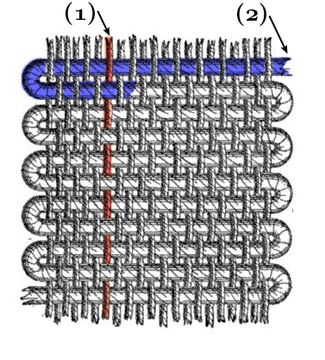Imagen de Kette_und_Schuß.png bajo licencia Creative Commons Attribution-Share Alike 3.0
Imagen de Miguel Á. Padriñán bajo licencia libre de Pexels

Imagen Temperguss-Schraubzwinge de BESSEY Tool GmbH & Co. KG bajo licencia Creative Commons Attribution-Share Alike 3.0 Germany
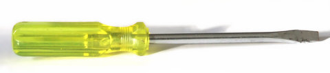
Imagen Yellow-flathead-screwdriver de Iainf bajo licencia Creative Commons Attribution-Share Alike 3.0 Unported
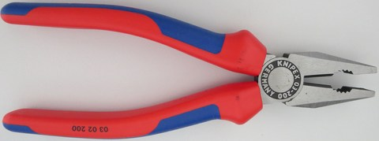
Imagen Kombinationszange de Stefan Pohl bajo licencia de dominio público.
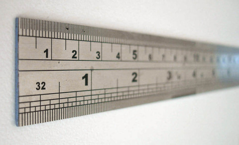
Imagen Steel ruler closeup de Ejay bajo licencia Creative Commons Attribution-Share Alike 4.0 International
Mecánica¶
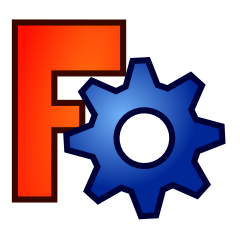Imagen Logotipo FreeCAD de Yorik van Havre bajo Licencia Pública General Reducida de GNU
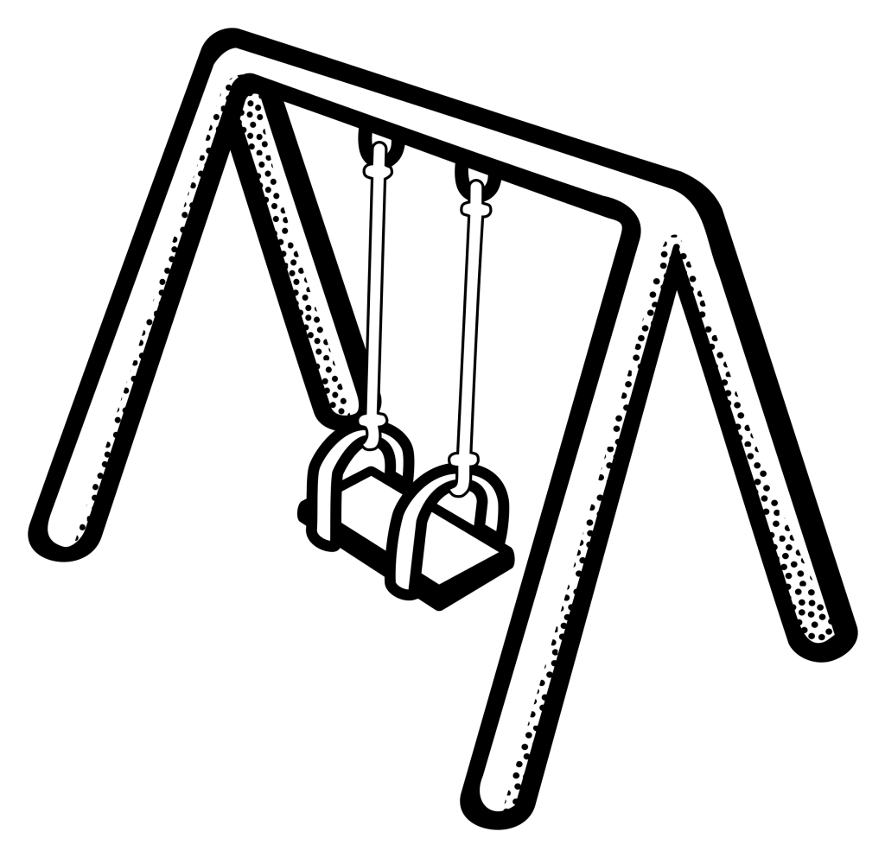Imagen line art swing de frankes bajo licencia Creative Commons Zero 1.0 Public Domain License
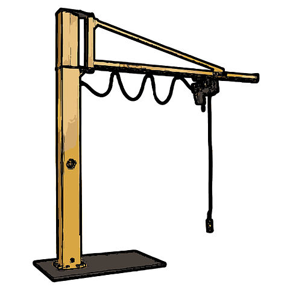
Imagen Jib crane bajo licencia Creative Commons Attribution-Share Alike 4.0 International

Imagen banner graphic 1 de Stephen J. Ressler con todos los derechos reservados.
Programación¶
Imagen Python logo de Python Software Foundation bajo licencia PSF Trademark Usage Policy
Imagen Processing logo de Processing Foundation protegida como Marca Registrada.
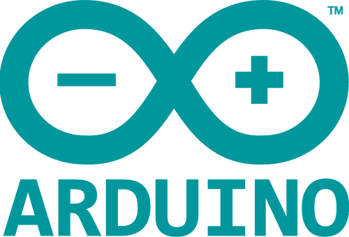
Imagen Arduino logo de Autor desconocido protegida como Marca Registrada.
Imagen Scratch logo de MIT bajo licencia Creative Commons Attribution-Share Alike 3.0 Unported y protegida como Marca Registrada.
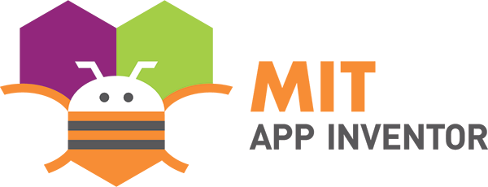
Imagen App Inventor logo de Massachusetts Institute of Technology bajo licencia Creative Commons Attribution-Share Alike 3.0 Unported

Imagen Bandera Olímpica de Pierre de Coubertin bajo licencia de dominio público.
Informática¶
Imagen Computer de AJ bajo licencia Creative Commons Zero 1.0 Public Domain License

Imagen Beach calm clouds idyllic de Asad Photo Maldivas bajo licencia libre de Pexels

Imagen Spa elec gen de Zmzmzm2 bajo licencia Creative Commons Attribution-Share Alike 4.0 International

Imagen Portrait de Metropolicons desde Flaticon bajo licencia Freepik
Imagen Logotipo oficial HTML5 de W3C bajo licencia Creative Commons Attribution 3.0 Unported
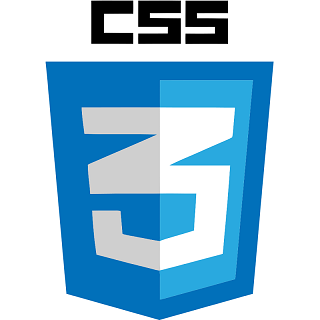
Imagen Logotipo oficial CSS3 de W3C bajo licencia Creative Commons Attribution 4.0 International
Imagen Logotipo oficial actual de Inkscape de Andrew Michael Fitzsimon bajo licencia Creative Commons Attribution-Share Alike 3.0 Unported

Imagen Computer keyboard ES layout de Oona Räisänen (Mysid) bajo licencia Creative Commons CC0 1.0 Universal Public Domain Dedication
Imagen LibreOffice 6.1 Writer Icon de The Document Foundation bajo licencia Creative Commons Attribution-Share Alike 4.0 International

Imagen ODT File Format free icon de Freepik desde Flaticon bajo licencia Freepik
Comunicaciones¶
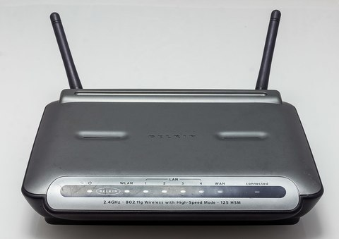Imagen Belkin Wireless G Router F5D7231-4 Version 1000de-1121 de Raimond Spekking bajo licencia Creative Commons Attribution-Share Alike 4.0
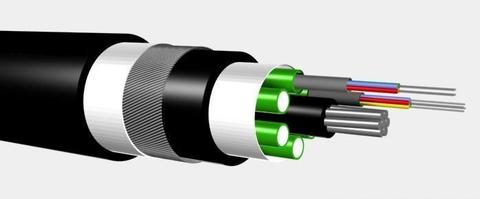
Imagen Optical fiber cable de Srleffler bajo licencia Creative Commons Attribution-Share Alike 3.0

Imagen Devolo dLAN 200 AVplus - 5016 de Sven Teschke / Lizenz bajo licencia Creative Commons Attribution-Share Alike 3.0 de

Imagen Coaxial cable cut de FDominec bajo licencia Creative Commons Attribution-Share Alike 3.0

{kind=link}
{kind=link}
{kind=link}
{kind=link}
{kind=link}
{kind=link}
{kind=link}
{kind=link}
{kind=link}
{kind=link}
{kind=link}
{kind=link}
{kind=link}
{kind=link}
{kind=link}
{kind=link}